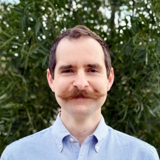

Eamon F.X. Byrne
Entrepreneur | Scientist | Cancer Therapeutics & Protein Engineering

Eamon F.X. Byrne, DPhil. (Oxon)
Postdoc in Bioengineering, Stanford University
DPhil. in Structural Biology, Oxford University
BSc (Hons) in Biochemistry & Chemistry, Melbourne University
BA in History & Chinese Language, Melbourne University
more of me.
what excites me.
I am driven by the potential of proteins as technology — nanoscale, programmable, biocompatible machines. I want to harness this power to build transformative companies that radically reduce human suffering and generate enormous value.
I completed my PhD in structural biology in order to understand proteins at the most fundamental level. I completed my postdoc in protein engineering in order to learn how to make new, useful proteins. Now, I apply that deep expertise in biotech startups to create powerful, real-world therapies.
where I’ve been.
From late 2023 to mid 2025, I was a Senior Scientist at GigaMune, Inc., a biotech company developing in vivo therapies (e.g., CAR-T) for cancer and inherited blood disorders, with a focus on gene therapy via cell-type-specific lentiviral delivery. Mice treated with our lead candidate showed 100% clearance of cancer (Spindler, … Byrne et al., bioRxiv 2025).
Between 2018-2023, I was a postdoc in the Deisseroth Lab at Stanford University. I engineered novel properties into light-activated ion channel proteins, such as ChRmine (Kishi, … Byrne et al., Cell 2022) and KCR1 & 2 (Tajima, … Byrne et al., Cell 2023). These new tools will be used to deepen our understanding of neural circuitry in the mammalian brain.
Between 2020-2023, I was Co-Chair of the SURPAS Long Range Planning Committee. We consulted with more than one hundred stakeholders to identify critical unmet needs within the postdoc community at Stanford University. From this consultation process, we developed a strategic multi-year plan with key recommendations for promoting postdoc support and advancement. This work culminated in the publication of the SURPAS Long Range Planning Report 2023. To our knowledge, this was the first postdoc-led long-range strategic planning process to have been conducted at any US university.
In 2019, I completed the Stanford Ignite entrepreneurship program at the Stanford Graduate School of Business and developed a venture pitch for machine-learning-enabled scribing for electronic medical records.
I received my DPhil. from the University of Oxford in 2018 with Christian Siebold. I uncovered molecular mechanisms of Hedgehog signal transduction by solving several crystal structures of the G-protein coupled receptor (GPCR) Smoothened, complexed to different small molecules, including an anti-cancer drug (Byrne et al., Nature 2016). We discovered that cholesterol is a Smoothened agonist (Luchetti, … Byrne et al., eLife 2016) and that multiple ligand binding sites regulate Smoothened (Byrne et al., Curr Opin Cell Biol. 2018).
In 2016, I was a fellow in the Ideas 2 Impact (I2I) Initiative at the University of Oxford Saïd Business School. STEM graduate students, like myself, joined the Oxford MBA Strategy & Innovation course to build connections and develop enterprise skills. Between 2016-2018, I formed a team to develop a new scientific publishing platform to speed up the peer review process and reduce reviewer bias.
In 2012, as an undergrad, I worked with Matthew Call and Melissa Call at the Walter & Eliza Hall Institute for Medical Research (WEHI) in Melbourne, Australia, to reveal the transmembrane determinants of ligand recognition for the E3 ubiquitin ligase MARCH9 (Tan, Byrne et al., J Biol Chem. 2019).
Between 2010-2013, I co-founded and was Managing Director of a non-profit organization called Teachabout, Inc. (now Titjimbat Gija) that ran educational school holiday programs for elementary-aged kids in remote, predominantly Aboriginal communities in the Northern Territory, Australia. These programs were free for the kids to attend and entirely voluntary.
I am committed to justice, equity, diversity and inclusion work. I was a co-facilitator of the CCC&AOP program at Stanford. In my free time, I love going rock climbing. Ask me about it!